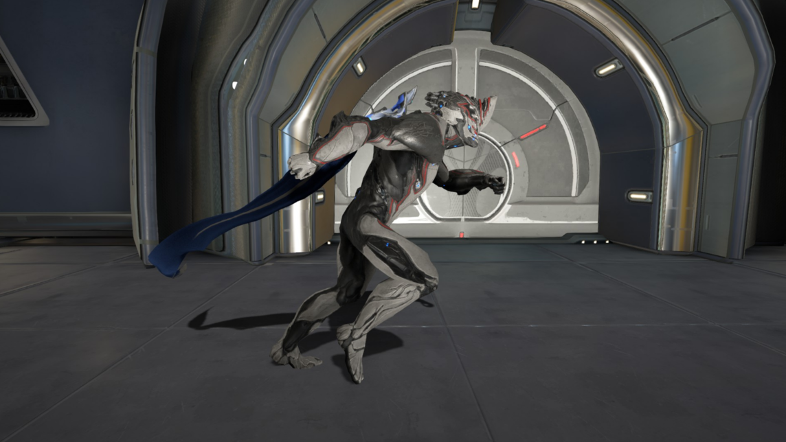
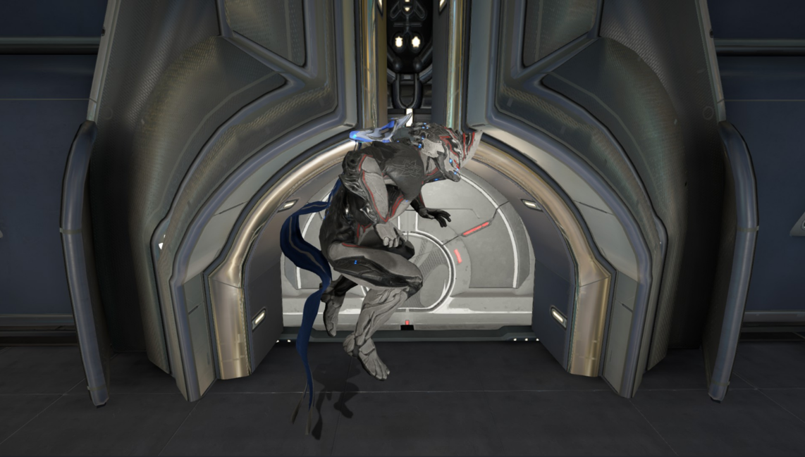
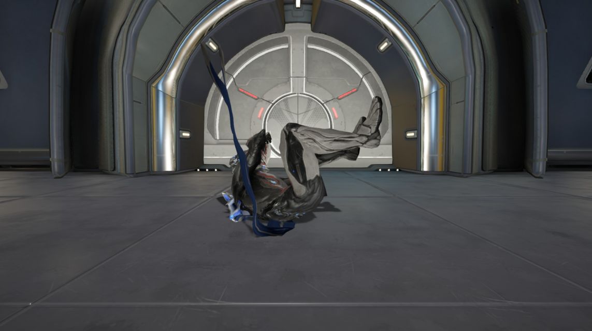
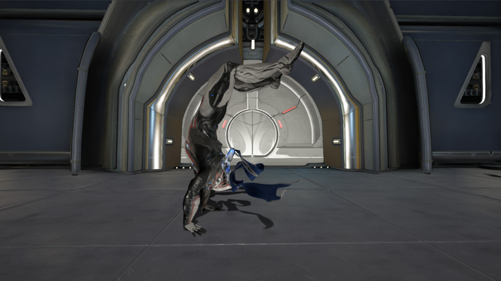
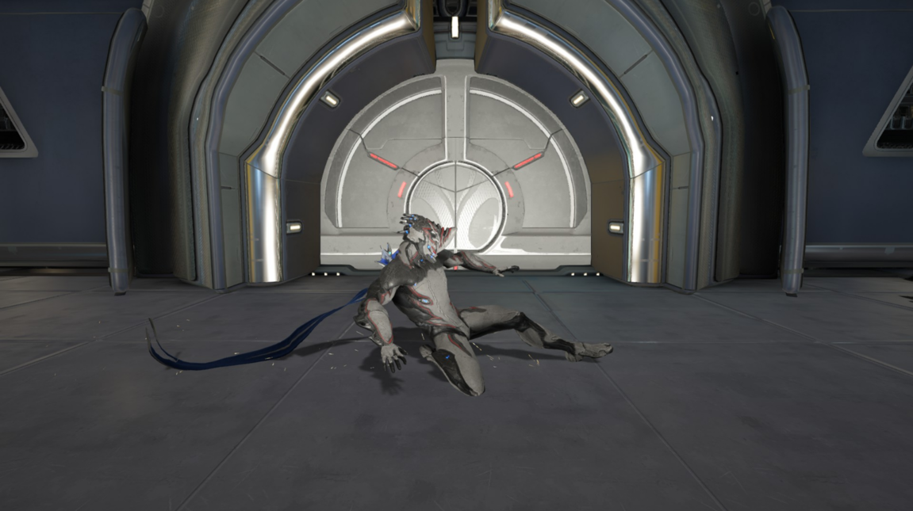
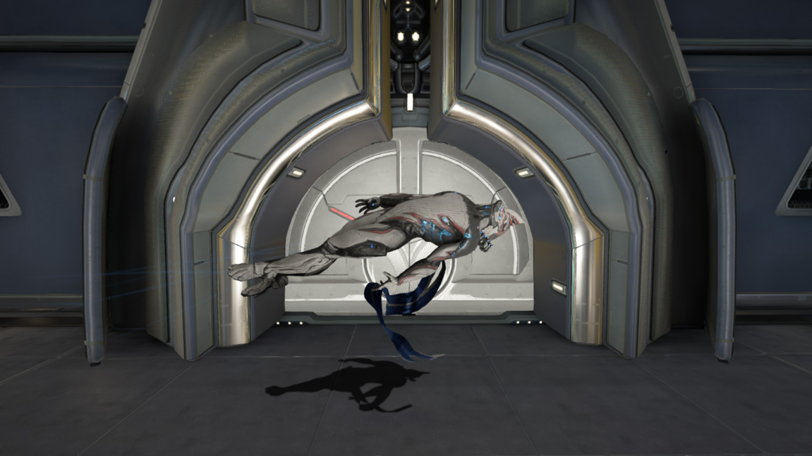
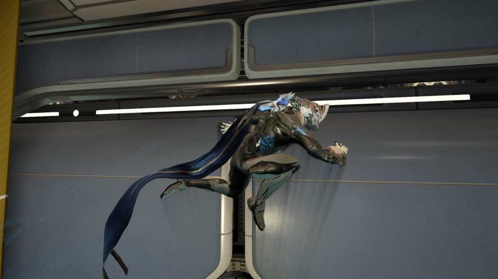
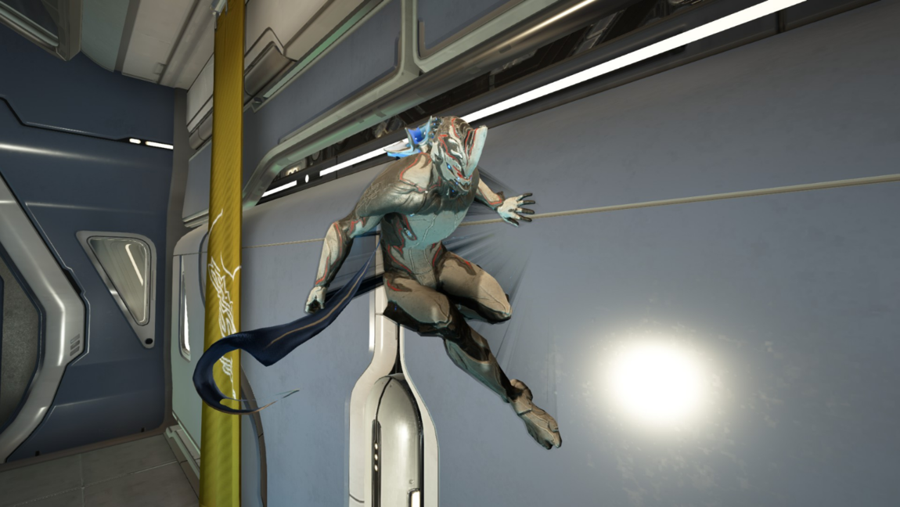

Beginner Movement
-Sprinting-

Sprinting can be achieved by holding your shift key while walking. There's not much to sprinting besides moving a bit faster. Enabling the toggle sprint option is highly recommended.
-Jumping-

Jumping can be performed by pressing your spacebar while standing, walking, or sprinting. A second jump can be performed in midair also known as a double jump.
-Rolling/Backward Handsprings-

Rolling can be performed by tapping your shift key while walking, sprinting, or aiming. Left and right rolls can be performed while aiming and pressing the shift key while holding either direction.
Alternatively, walking backward while aiming and pressing shift will result in a backward handspring rather than a roll.
-Sliding-

Sliding can be performed by holding the crouch key while moving in any direction. Sliding can be done in midair to start a kick that turns into a slide once you land.
Midair kicks/slides can be utilized at the end of a long fall to prevent a hard falling animation and preserving your momentum.
-Bullet Jumps-

Bullet jumps can be performed by pressing the jump key while crouching or sliding. These are useful for gaining height and distance.
-Wall Running/Wall Latching-

Walling running is achieved be pressing/holding the jump key while up against a wall in midair. Simply tapping the key will result in a single jump while holding will allow you to run along a wall or scale it vertically.

Wall latching is the result of pressing the aim key instead of the jump key in midair on a wall. This allows you to stick to a wall while having the freedom of aiming and firing your weapon. It should be noted this is not infinite.
-Sprinting-

Sprinting can be achieved by holding your shift key while walking. There's not much to sprinting besides moving a bit faster. Enabling the toggle sprint option is highly recommended
-Jumping-

Jumping can be performed by pressing your spacebar while standing, walking, or sprinting. A second jump can be performed in midair also known as a double jump.
-Rolling/Backward Handsprings-

Rolling can be performed by tapping your shift key while walking, sprinting, or aiming. Left and right rolls can be performed while aiming and pressing the shift key while holding either direction.

Alternatively, walking backward while aiming and pressing shift will result in a backward handspring rather than a roll
-Sliding-

Sliding can be performed by holding the crouch key while moving in any direction. Sliding can be done in midair to start a kick that turns into a slide once you land.
Midair kicks/slides can be utilized at the end of a long fall to prevent a hard falling animation and preserving your momentum.
-Bullet Jumps-

Bullet jumps can be performed by pressing the jump key while crouching or sliding. These are useful for gaining height and distance.
-Wall Running/Wall Latching-

Walling running is achieved be pressing/holding the jump key while up against a wall in midair. Simply tapping the key will result in a single jump while holding will allow you to run along a wall or scale it vertically.

Wall latching is the result of pressing the aim key instead of the jump key in midair on a wall. This allows you to stick to a wall while having the freedom of aiming and firing your weapon. It should be noted this is not infinite.